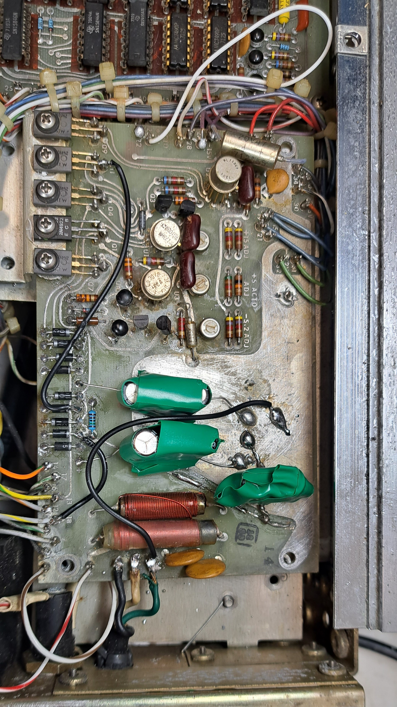
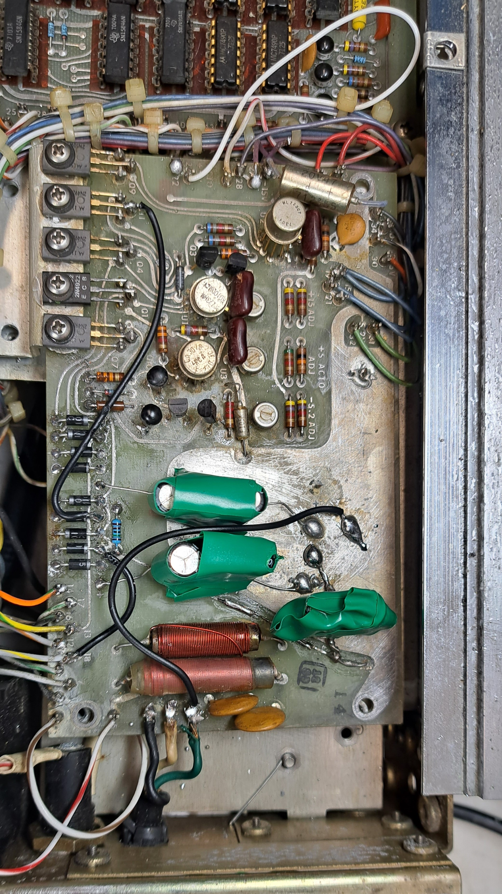
1/15/2024
Here is the manual with schematics for this device:
Manual - Version 1
Manual - Version 2
I recently found a good deal for a Systron Donner Model 6053 frequency counter. Compared to modern instruments, it is very primitive (9 digits, no timer functionality, crappy OCXO, etc), but this model can count up to 3GHz, which still makes it very nice for working with microwave circuits. I have nothing that can accurately measure microwave frequencies (4GS/s oscilloscope is my best scope), so I picked up this instrument for my bench. Besides, who doesn't love a nixie tube display?
Based on the calibration stickers, this particular counter seems to come from the Navy. I wager that if the most funded army in the world deemed this instrument acceptable, it must be good. I bought the unit as broken, and the seller did deliver. Upon powering on, the unit displays garbage and one of the Nixie tubes doesn’t turn on. I also get a shock when touching the metal case; it's floating and has 60VAC over it. Seems like the ground connection came loose and there is some capacitive coupling, not a loose mains connection since the shock was not terribly painful.
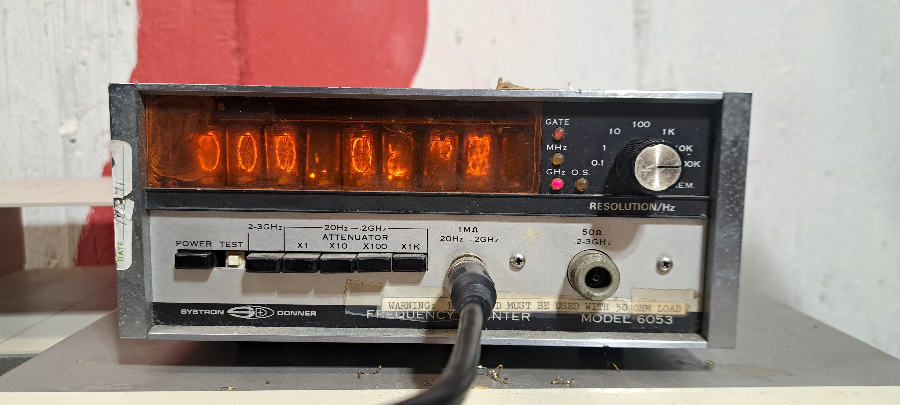 Image of Initial Condition
Opening it up, this unit does show its age. Leaking capacitors, lots of discrete logic, hand-drawn PCB traces,
and more. Based on the date codes, this particular unit seems to be from 1971. The first issue to fix is the
power supply. The 50-year-old capacitors leaked long ago and ate away at the PCB. I did not have any capacitors
on hand of this size/voltage rating, so I just fashioned some from smaller electrolytics (less than ideal but OK
for now). I found several broken or peeling traces, vias, and leads. Someone had worked on the board before, as
there were mismatched diodes poorly soldered in with long leads, likely due to the soldered-in interconnects
tying the board down. One of these diode leads was broken, and the entire section was heavily corroded. I
carefully desoldered the damaged components, cleaned and re-tinned the traces, and replaced all failing parts.
While working beneath the PCB, I discovered a broken trace that routed ground to earth, so I added my fix,
eliminating the floating case issue.
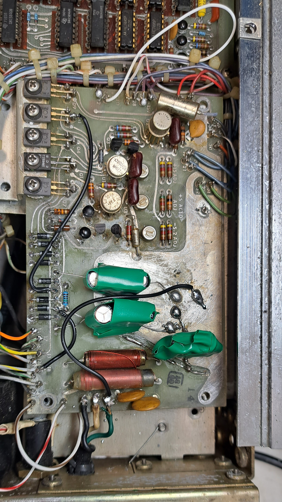
Powering the instrument back up, the instrument does readout correctly although one of the nixie tubes is still blank. Following basic troubleshooting steps, I simply swapped the broken nixie tube with a working neighbor; the good tube was displayed in the dead tube slot, and the bad tube stayed off in the known good spot. I then went through some sanity checking; the 7441 driver chips seemed to be sinking the correct amount of current & decoding correctly, the half-rectified voltage wave with a 225V peak is there, and the cathode resistor measures fine, so I had to conclude that the nixie tube was dead. I suspect this to be cathode poisoning due to the age of this instrument, and some of the other nixie tubes also exhibit symptoms: noticeably less bright, flicker and some digits don't light up fully. Several other tubes exhibited similar signs of degradation, including dimming, flickering, and partially illuminated digits. Unfortunately, NOS replacement nixie tubes cost about $40 each and take a long time to ship.
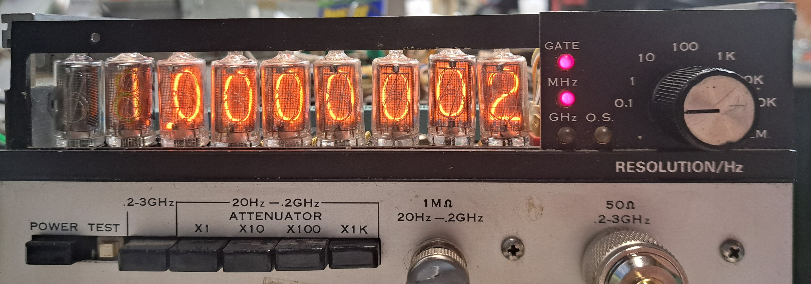
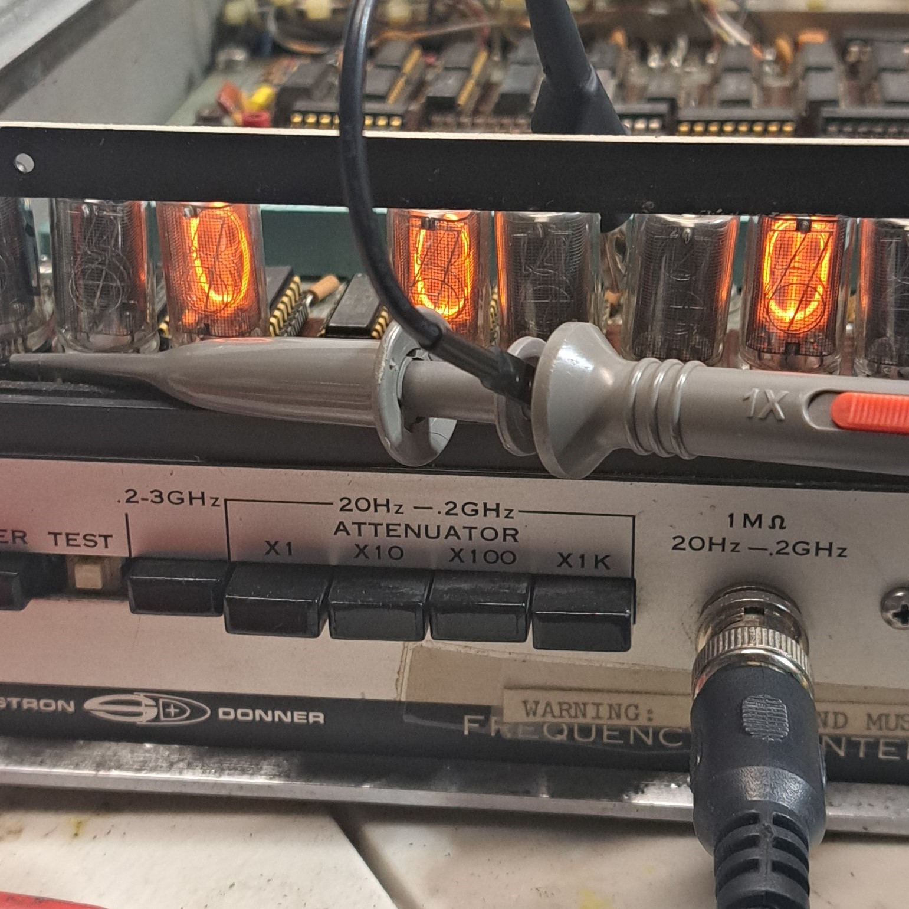
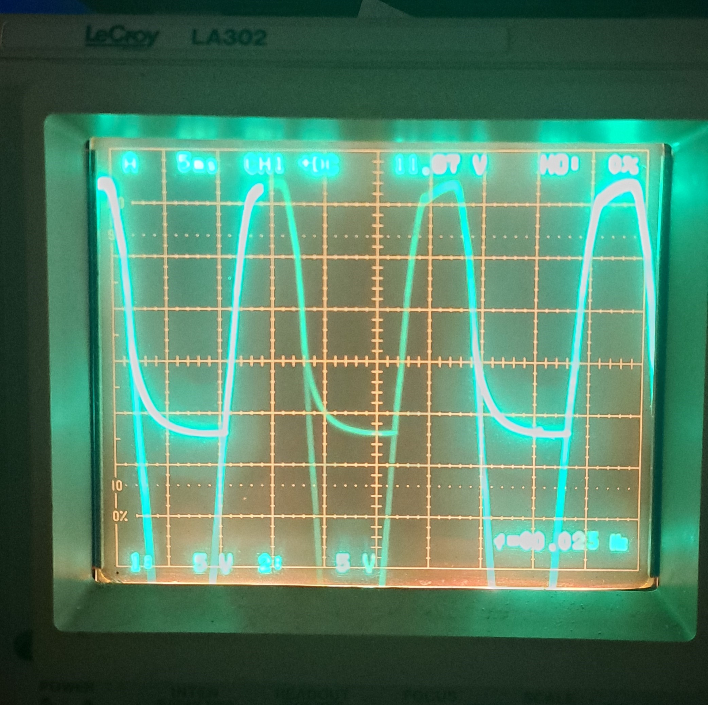
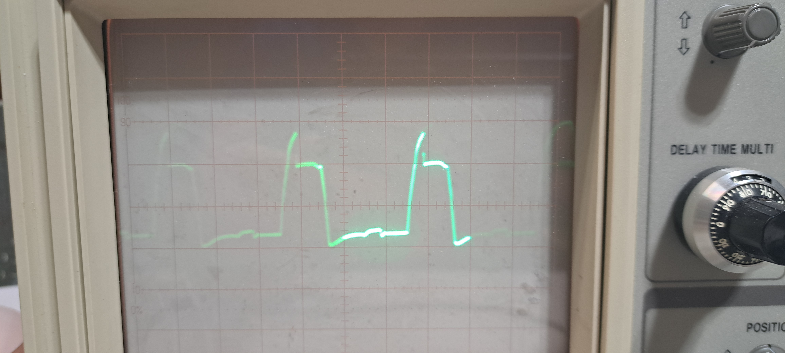
Top to bottom left to right: The instrument working w/ one broken & one dim nixie, probing the voltage after the nixie bias resistor, not striking nixie voltage vs time, properly striking nixie voltage vs time.
Instead of replacing the Nixie tubes, I opted to butcher the display by replacing it with a 7-segment display. Given that the data was already in BCD format, I simply used a 7447 IC to decode and drive the new display. Though not aesthetically pleasing, it gave me a functioning front panel. I rearranged the remaining nixie tubes, moving the dimmer and flickering ones to less significant digit positions to even out the wear and hopefully make them last longer (cathode poisoning since more significant digits usually displayed 1 or 0). For the finishing touches, I cut a new plastic display cover to replace the yellowed original, removed the old calibration stickers, cleaned out the dust, and printed out the stability of the oscillator.
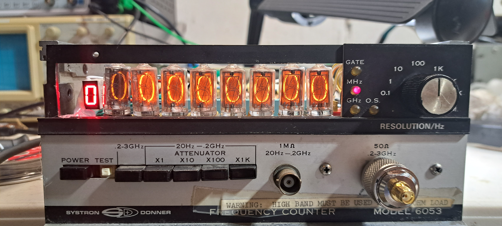 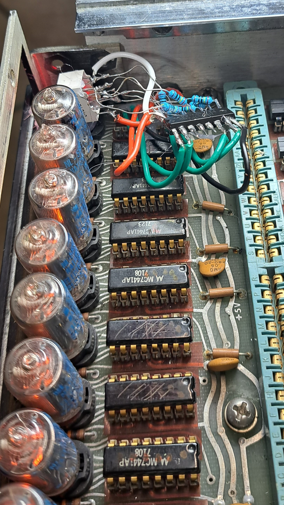 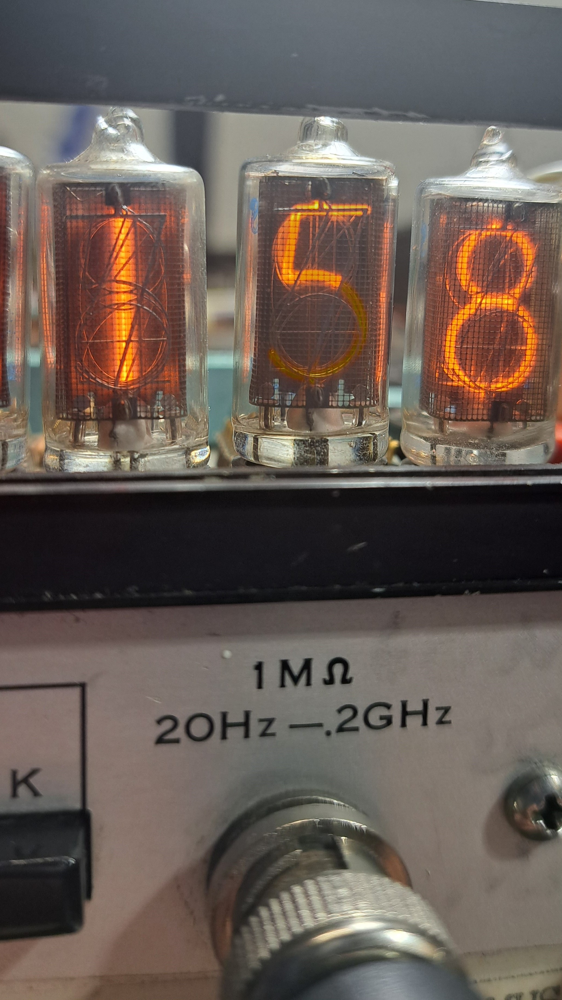
Top to bottom left to right: Fixed display, Butchery in the back, Burn in on one of the tubes
There are 2 different ways one can go about measuring a frequency, direct or reciprocal. Direct frequency counting is where you start a timer for some time t and count n cycles during that period, then find frequency by f=n/t. Reciprocal frequency counting works instead by starting a timer and measuring the time it takes for n cycles, then finding the frequency by f=n/t.
Direct Frequency Counters are limited by the number of counts we measure in our period, as the number of cycles has an uncertainty of ±1 ideally, which gives a best-case frequency uncertainty of ±1/t (our clock starts at an arbitrary point on the input signal, so we may pick up or lose an extra count). For example, if you try to measure a 1Hz signal with a gate time of 0.1s, 9/10 times you will count nothing and 1/10 times you will measure a 10Hz signal, making each measurement useless without averaging hundreds of cycles (which is just equivalent to taking a longer gate measurement). So for example to measure a signal to 1/10 Hz resolution, you need to measure for much more than 10s. Direct frequency counters are limited when it comes to measuring low frequencies and high resolution but work great for high frequencies. Real-world counters also have uncertainty in their timebase, based on less-than-perfect calibrations and drift, in which the uncertainty in frequency is also dependent on the uncertainty in the time: Δf/f = Δt/t. Assuming our n±1≈n (so f>>1/t) and t±Δt≈t, we can derive Δf ≈ ±(n*Δt)/t^2 = (f * Δt)/t. So if I am measuring a 1Ghz wave with a 1s timebase of uncertainty of 1ppm, Δf=±1khz, significantly more than than ±1Hz error from using a 1s timebase.
Reciprocal frequency counters are also limited similarly by their internal timer resolution t_res, the LSD of the counter. (e.g. t=11.3567s, t_res = 0.0001s). The maximum measurable frequency is 1/t_res, as signals with periods shorter than t_res will all be recorded as t_res. The accuracy of the frequency measurement is affected by the uncertainty in t, Δt, which is in the worst-case ideal scenario Δt=t_res (e.g. if our n cycles just finished, we may have to wait for t_res until the timer stops counting). This is technically one-sided as we only overcount and not undercount, but since in the real world our time uncertainty comes from not just our timer but also from the inaccuracy of the timebase, it is simpler to treat the uncertainty as 2 sided (e.g. Δt=±(t_res + t_tuncertainity)). For n cycles measured over a time t, we can use the same formula Δf ≈ ±(n*Δt)/t^2 = (f * Δt)/t to calculate our uncertainty in frequency. If we measure a 1Ghz signal with a 10Ghz counter (so t_res = 10^-10s, choosing n=10^9 so t=.1s), we get Δf=±1Hz. If we have the same 1ppm uncertainty in our timebase, we get the same Δf=±1khz uncertainty, which is usually the dominating factor. Although, it is easy to see we can achieve the same ideal uncertainty as the direct frequency counter using only 1/10th of the time, which is the major advantage of reciprocal frequency counting: we control our t_res by controlling our internal counter, so if we engineer it well, we can measure our frequency much faster and usually more accurately than a direct frequency counter. Modern frequency counters are all reciprocal, can achieve >11 digits of range, and often have atomic rubidium standards which can achieve stability in the ppb range (and the capability to sync to even more stable standards). Designing the high-frequency counter is not easy, but there are tricks like interpolating counters or linear regression that can get the effective measurement frequency to >50GHz to achieve that high resolution. This is a great source for some of these advanced tricks.
Anyway, enough theory, let's talk about the actual device.

This is very simple direct frequency counter built discretely from relatively simple logic & components; although there is some RF magic going on in the >200MHz department I will try my best to explain. With a maximum gate time of 10s, we are limited to a maximum resolution to 0.1Hz or 9 digits. Super slow & poor accuracy compared to basically any other counter, but the ability to measure microwave frequencies is still useful.
Unlike modern days where everything has a microcontroller, this instrument from 1971 (Intel 4004, the first general purpose CPU released also in 1971) had to be built entirely from discrete logic. On paper, both reciprocal and direct frequency counting require division & multiplication, but in a direct frequency counter, we have control over the time we measure. This way, we can use powers of 10 for the time bases, which when we divide our counts by to find the frequency (f=n/t) corresponds to moving the decimal point around; no ‘real’ computations with integer division are needed, as would be needed for a reciprocal frequency counter. By also making the counter a decade one (each stage counts from 0-9 before incrementing the next stage), each counter stage corresponds exactly to each digit, making it easy to decode.
The counter is made up from 9 separate counter ICs that count from 0 to 9, which upon reaching 10 reset back to 0 and increment the counter in front of it by one. The counter within this instrument has a 200MHz bandwidth, and is built from 9 decade stages (each one corresponds to a digit). The input frequency of each counter effectively is divided by 10 by each stage, so the first decade needs to have a bandwidth of 200MHz, the next one 20MHz, the one after 2MHZ, and so on. For the first stage that requires the high 200MHz bandwidth, they built discretely from 4 high speed flip flops (MC1670L & MC1027P) and some discrete logic to reset the counter when it reaches 9. The 20MHz and subsequent decades use classic discrete SN7490A counter chips. The data from these counter chips is then stored in a SN7075N latch (old labeling for SN7475 latch chips) which stores the current count while the next one is in progress. Finally, the data from these latches is decoded and displayed by MC7441 nixie tube drivers.
This instrument has 2 bands: 20Hz to 200MHz and 200MHz to 3GHz. The lower frequency band is relatively simple: the signal is first sent through the front end made of an attenuator & amplifier to increase dynamic range, before being fed into a shaper circuit to turn the input into a square wave. The signal is then fed into the counter and frequency is displayed. The higher frequency band is not directly fed into the counter but is instead downconverted.
Generally these days, the easiest way to do this is with some high-frequency flip flops (so called static dividers, see this video). This follows the same principal as our counter but without reading the state of the flip flops. This results in a additional ambiguity of ±1 counts in our counter after the /n divider, or ±n once we multiply our count by the division factor (e.g. 7 cycles into /2 static divider -> either 3 or 4 output pulses depending on intial state of flip flop which is unkown, so f_measured = 6 or 8 Hz). This can be neglected if our counts >> 1 or counts * n >> n.
However, it is also possible to downconvert the signal using mixers (dynamic frequency division), and that is what this instrument does. Under the dynamic frequency divison, we have our intial f_sig, which we then mix with a fraction of the input signal frequency, then select the lower sideband. So for example, if we have f_sig, we can mix it with 0.5 f_sig to get 1.5f_sig and 0.5f_sig, the filter so we are left with only 0.5f_sig, and we get a /2 division. This is a much more complex & expensive process, with lots of power loss, little dynamic range. Although once you have the circuit stabilized (requiring continous input signal), there is theoretically no additional ambiguity unlike the static divider (which is already negligble). With modern flip flops which can acheive input frequency in the 10s of GHz, dynamic division is rarely used. However, this instrument comes from a older era, with slower & more expensive high speed flip flops, so the engineers chose to rely on dynamic frequency conversion.
The specific topology used is reffered internally as the Automatic Computing Transfer Oscilator, which was patented in 1973. (RIP Richard Voyles)
The general architecture works by sweeping a VCO, using it as the LO a harmonic mixer with the RF input frequency (for an antiparallel diode, generates odd harmonics of the LO which also mix with the input), so our output has many superimposed frequencies f_RF ± n*f_vco, for n=2,4,6,... (read paper on why). The output from the mixer is fed into a filter of 10Mhz, and the VCO is sweeped until a signal appears after the filter. Then we know ~10Mhz = f_IF = f_RF - n*f_vco: our VCO is a multiple of the input frequency. This is great, but we don't actually know what n is at this point since f_RF & f_vco isn't known. To figure that out, we take an idential mixer & filter setup, feed it the same RF input frequency, but we make our LO f_vco - 1khz (done w/ a Single Side Band Generator). The harmonic we are interested in now is: f_in - n * (f_vco - 1khz) = f_in - n*f_vco + n*1khz = f_IF + n*1khz. So we have applied a n*1khz offset. So if we take the difference between the first harmonic mixer and second harmonic mixer (using a 3rd mixer, filtering off high filtering out f_1+f_2 so we get f_1-f_2) we can isolate n*1khz. Then we feed this into a counter (timer counts for 4ms -> /4 then an 8 bit counter) and we can find out the harmonic number. Once we know the harmonic number n, and that n*f_VCO = f_RF, we can simplpy feed the f_VCO into our counter, and simply count for n times more time. This is how the instrument does downconversion.
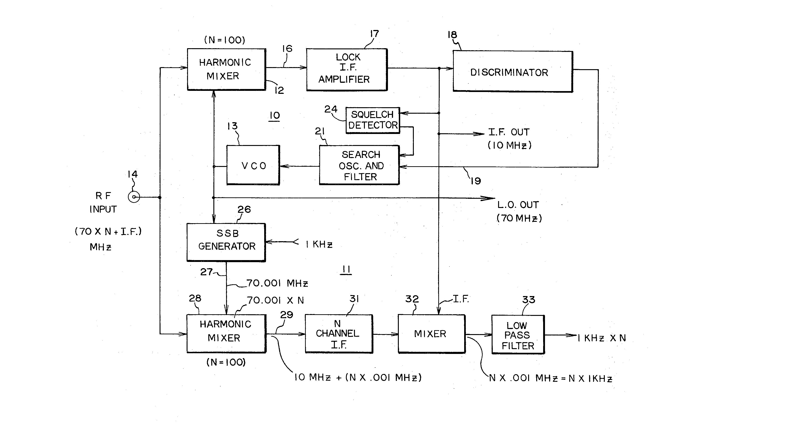
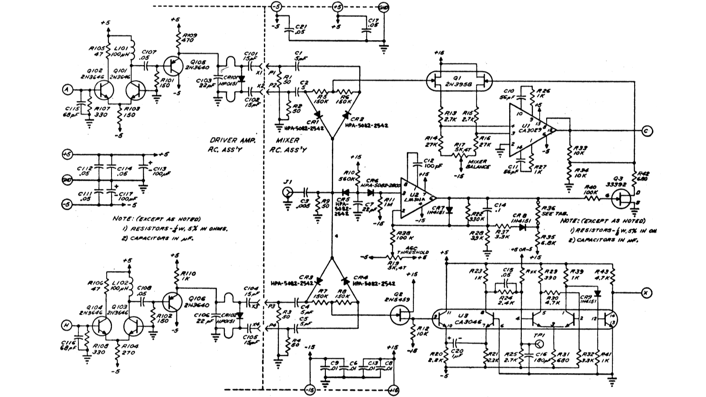
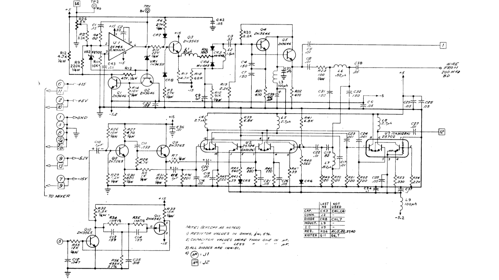
Anyway, extremely involved process. The whole thing is also built discretely, so lots of advanced RF & analog techniques, BJTs, JFETs, matched pairs, etc. Not for the faint of heart, an art form that has faded over the past 50 years. Thank god that there was nothing broken in this section, or fixing it would be a nightmare. Its a complete miracle that this circuit even works, especially with those extremely lossy harmonic mixers (which are just 2 diodes in parallel facing different directions, aka antiparallel). The IF only varries between 17.5MHz & 19.5MHz, so to downconvert f_RF = 3GHz, so 153 < n < 171; the patent also supports this by giving a number n~100; while typically the maximum n for a harmonic mixer is ~20. The conversion loss must be pretty high, given that P_min = -7dbm for this instrument, but I cant find any infromatiion about harmonic mixing at such a high number. This is interesting to me, if I have some time I will run some of my own experiments both on this board & some antiparallel diode mixers.
Anyway, I think thats all I have to say about this instrument: you can find alot more detail in the schematics which also has circuit descriptions.
Email me if you have questions: dp@dpautov.com
Get a copy of my resume